对象序列化与文件 I/O: 对象的保存
serialization and file I/O: Saving Objects

图 1 - 第14章题图
对象可被放气或充气（Objects can be flattened and inflated）。对象具有状态和行为。关于对象的那些 行为，是存活在 类 中，而 状态 则是存活在各个单独 对象 中的（Behavior lives in the class, but state lives within each individual object）。那么在对对象状态进行保存时，会发生什么呢？比如在编写某个游戏时，就会需要一个特性来保存/恢复游戏。又比如在编写某个创建图表的app时，就需要一个保存/打开文件的特性。在程序需要保存状态时，可以笨办法来完成，对各个对象进行询问，然后费力地将各个示例变量的值，以某种自创格式，写到一个文件。或者，可以轻松的面向对象方式完成 -- 简单地将对象本身冻干/压平/持久化/脱水，然后再通过重组/填充/恢复/注水，来取回对象。不过 某些时候 仍然需要以笨办法来完成对象状态的保存，尤其是app保存的文件必定会被其他非Java语言的 app 读取的时候，所以本章会对这两种保存对象状态的方式加以审视（If your program needs to save state, you can do it the hard way, interrogating each object, then painstakingly writing the value of each instance variable to a file, in a format you create. Or, you can do it the easy OO way -- you simply freeze-dry/flatten/persist/dehydrate the object itself, and reconstitue/inflate/restore/rehydrate it to get it back. But you'll still have to do it the hard way sometimes, especially when the file your app saves has to be read by some other non-Java application, so we'll look at both in this chapter）。
对节拍进行捕获
Capture the Beat
现在 构造 好了完美的音乐曲目。那么就要把这个曲目 存储 起来。当然可以拿张纸然后摘抄下来，不过这里是要做成点击 保存 按钮的方式（或者从“文件”菜单中选择“保存”）。接着就要提供一个名称，选取某个目录，并确保这首优美的曲子，不会因为系统蓝屏司机而丢失（You could grab a piece of paper and start scribbling it down, but instead you hit the Save button(or choose Save from the File menu). Then you give it a name, pick a directory, and exhale knowing that your masterpiece won't go out the window with the blue screen of death）。
对于保存Java 程序状态来说，有很多个选项，至于具体选用何种选项，将取决于计划怎样去 使用 所保存的状态（You have lots of options for how to save the state of your Java program, and what you choose will probably depend on how you plan to use the saved state）。本章要检视的几种选项如下所示。
在数据只会被生成数据的 Java 程式使用到时（If your data will be used by only the Java program that generated it）：
-
运用对象序列化
Use serialization
对留存了被压扁（序列化的）对象的一个文件进行写入。随后程序就从这个文件读取这些序列化的对象，并将他们充实回到活生生的、有呼吸的、存在于内存堆的对象（Write a file that holds flattened(serialized) objects. Then have your program read the serialized objects from the file and inflate them back into living, breathing, heap-inhabiting objects）。
在数据会被其他程序使用到时：
-
写入 普通文本 文件
Write a plain text file
写入到一个带有分隔符，从而可被其他程序解析的文件。比如就可以写入到一个由制表符分隔的、可被电子表格或数据库应用使用的文件（Write a file, with delimiters that other programs can parse. For example, a tab-delimited file that a spreadsheet or database application can use）。
当然并非只有这两个选项。可以所选的任意格式来保存数据。除了往文件中写入字符，还可以将数据写为字节（Instead of writing characters, for example, you can write your data as bytes）。还可以把那些 Java 原生值当作 Java 原生值来写入文件 -- 对于整数、长整数、布尔值等原生值类型，是有相应方法来写入文件的。但不管使用何种方法来保存数据，文件
I/O的基本技巧总是不变的：把一些数据写入到 某个东西（something），而通常这某个东西要么是磁盘上的文件、要么就是来自网络连接的流（But regardless of the method you use, the fundamentalI/Otechniques are pretty much the same: write some data to something, and usually that something is either a file on disk or a stream coming from a network connection）。读取数据则是同样的过程，只是反过来而已：从磁盘上的文件或某个网络连接，读取到一些数据。同时本章所讨论的内容，是在未使用到某种具体数据库时，所涉及的数据保存。
对状态进行保存
Saving State
设想有这么一个程序，比方说，一个奇幻冒险游戏，需要与玩家进行多次会话才能完成。随着游戏的进展，游戏中的角色变得愈加强大、弱小、灵巧等等，并会收集（或丢失）各种武器。那么就肯定不愿意每次启动游戏都又从头开始玩 -- 那样你的游戏角色就永远不会在某次激烈战斗中有最佳状态。那么就需要一种保存游戏角色状态的方式，以及在继续游戏时对状态进行恢复的方式。而由于作为游戏程序的编写者，就会希望整个保存与恢复，应该尽可能是容易实现（且简单明了）。
-
选项一
把这三个序列化的游戏角色写到某个文件
创建出一个文件，并写入三个序列化角色对象。这个文件在作为文本进行读取时，并无任何意义：
̈ÌsrGameCharacter ̈%gê8MÛIpowerLjava/lang/ String;[weaponst[Ljava/lang/ String;xp2tlfur[Ljava.lang.String;≠“VÁ È{Gxptbowtswordtdustsq~»tTrolluq~tb are handstbig axsq~xtMagicianuq~tspe llstinvisibility -
选项二
写入普通文本文件
创建出一个文件，并写入三行文本，每行一个游戏角色，用逗号分隔角色状态的各个部分：
50,Elf,bow, sword,dust 200,Troll,bare hands,big ax 120,Magician,spells,invisibility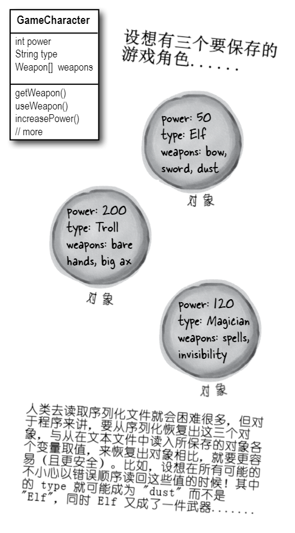
图 2 - 对象存储图解
把序列化对象写到某个文件
以下就是将对象进行序列化（保存）的步骤（Here are the steps for serializing(saving) an object）。不用纠结于把这些步骤都记住；本章后续会深入讲解。
-
构造一个
FileOutputStream对象// 构造出一个 FileOutputStream 对象。FileOutputStream 知道怎样去 // 连接（并创建出）一个文件。 // // 若这个 “MyGame.ser” 文件不存在，那么他就会被自动创建出来。 FileOutputStream fileStream = new FileOutputStream("MyGame.ser"); -
构造一个
ObjectOutputStream对象// ObjectOutputStream 实现对象写到文件，但他无法直接连接到 // 文件。他需要喂入一个“helper”。这实际上就是把一个流“链接” // 到另一个上（This is actually called 'chaining' one stream // to another）。 ObjectOutputStream oStream = new ObjectOutputStream(fileStream); -
写入对象
// 对这些由 characterOne, Two, Three 所表示的对象进行序列化操作 // 并将他们写到文件 “MyGame.ser” 中。 oStream.writeObject(characterOne); oStream.writeObject(characterTwo); oStream.writeObject(characterThree); -
关闭
ObjectOutputStream// 关闭了顶部的流，就会关闭其下所有的其他流，因此 `FileOutputStream` // （及那个文件）就会自动关闭。 oStream.close();
在各种流中，数据从一处往另一处移动（Data moves in streams from one place to another）。
Java 的 I/O API，有着各种表示到诸如文件或网络套接字这类目的与源的连接，以及将那些只有被链接到其他流才会工作的流 链接 起来的 连接性 流（The Java I/O API has connection streams, that represent connections to destinations and sources such as files or network sockets, and chain streams that work only if chained to other streams）。
通常，要至少同时钩起两个流流，才能完成有用的事情 -- 一个 表示连接，而 另一个 则是要调用到他的方法。为什么是两个呢？因为 连接 流通常都是很低级别的。就拿 FileOutputStream（就是一个连接流）来说，就有写入 字节 的一些方法。但这里并不想要写入 字节！这里要的是写入 对象，因此就需要一个高级别的 链接 流（Often, it takes at least two streams hooked together to do something useful -- one to represent the connection and another to call methods on. Why two? Because connection streams are usually too low-level. FileOutputStream(a connection stream), for example, has methods for writing bytes. But we don't want to write bytes! We want to write objects, so we need a higher-level chain stream）。
好，那么又为什么不只要精准完成所需的单个流呢？一个实现对象写入并同时将对象转换成字节的流？这就要考虑良好的面向对象了。每个类做好 一件 事情。FileOutputStream 就是把字节写入到文件。ObjectOutputStream 就是把对象转换成可写入到流的数据。所以这里构造一个 FileOutputStream 来实现到文件的写入，并在 FileOutputStream 末尾钩起一个 ObjectOutputStream（一个链接流）。在调用ObjectOutputStream上的 writeObject() 方法时，对象就被泵入到流中，随后就移动到 FileOutputStream，在那里最终被作为一些字节，写到某个文件。
不同连接与链接流组合的混搭能力，赋予到我们惊人的灵活性！若强制要求使用仅仅 单个 的流类，那么就会受 API 设计者们的支配，就会希望他们能考虑到咱们所期望的所有功能。然而有了流链接特性，就可以组装出自己 定制 的各种流链（The ability to mix and match different combinations of connection and chain streams gives you tremendous flexibility! If you were forced to use only a single stream class, you'd be at the mercy of the API designers, hoping they'd thought of everything you might ever want to do. But with chaining, you can patch together your own custom chains）。
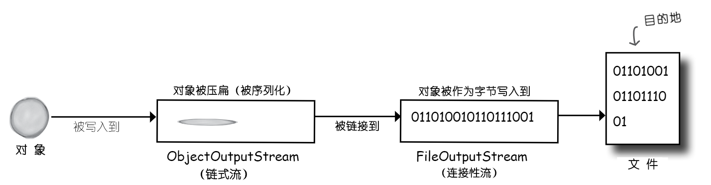
图 3 - Java对象写入文件过程
在对象被序列化时，到底发生了什么？
What really happens to an object when it's serialized?
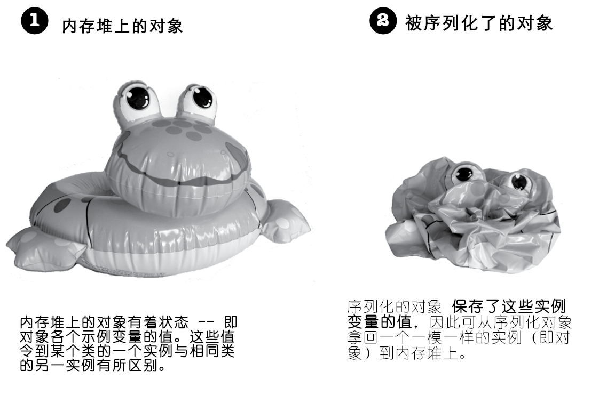
图 4 - 图解存活对象与序列化对象的区别
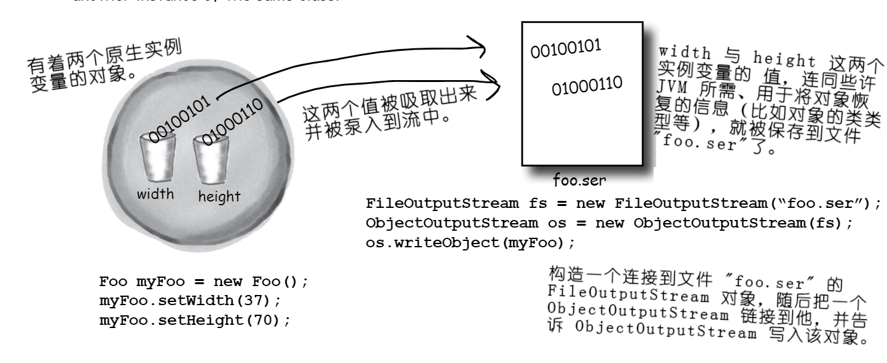
图 5 - Java保存对象实例
然而对象状态 究竟是 个什么呢？到底需要保存什么呢？
But what exactly IS an object's state? What needs to be saved?
现在就开始变得有趣起来了。要保存 原生 值 37 与 70 是相当容易。但如果对象有着一个是对象 引用 的实例变量呢？某个对象有着五个的对象引用的实例变量又会怎样呢？如果这些对象实例变量本身又有实例变量的话，又会怎样呢（Easy enough to save the primitive values 37 and 70. But what if an object has an instance variable that's an object reference? What about an object that has five instance variables that are object references? What if those object instance variables themselves have instance variables）？
请想想。对象的什么部分，是潜在唯一的？试想一下为了获得一个与所保存对象一致的对象，究竟需要恢复的是什么。当然对象将有着不同的内存位置，然而对于这一点我们并不关心。这里所关心的，全是在内存堆上得出的结果，将获取到一个与对象被保存时有着相同状态的一个内存堆上的存活对象。
脑力锻炼
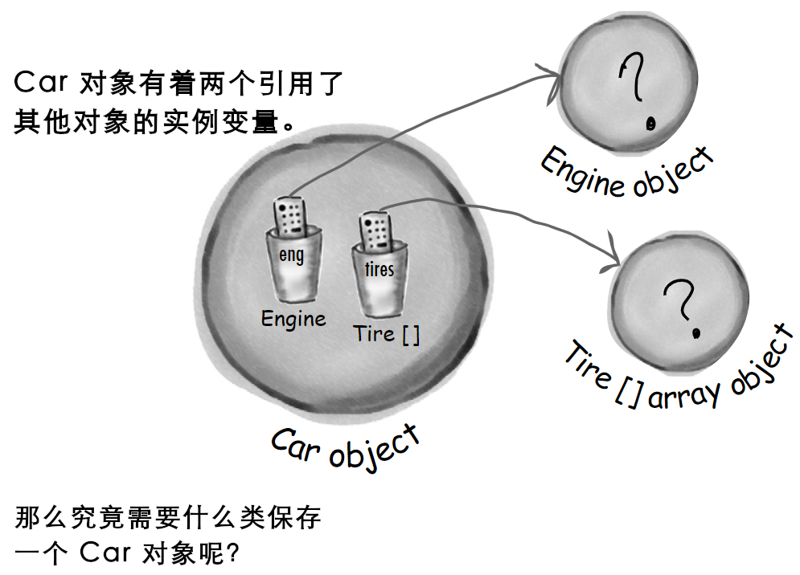
图 6 - 如何保存带有到其他对象引用变量的对象
必须要怎样保存 Car 对象，才能从 Car 副本中恢复到其原先的状态？
试想一下要保存 Car 对象会需要些什么 -- 以及怎样去保存他。
同时在 Engine 对象又有着到 Carburetor 对象的引用时，会怎样呢？以及在 Tire [] 这个数组对象中又有着什么呢？
在某个对象被序列化时，自其实例变量引用到的全部对象同时被实例化。这些被引用对象引用到的对象亦被实例化。这些被引用到的对象所引用的对象，亦被实例化......而最妙的地方就是，这些都是自动发生的！
这个 Kennel 对象有着一个到 Dog [] 数组对象的引用。而 Dog [] 中留存了对两个 Dog 对象的引用。每个 Dog 对象留存了到一个字符串及一个 Collar 对象的引用。字符串对象有着一个字符集合，同时 Collar 对象有着一个整数。
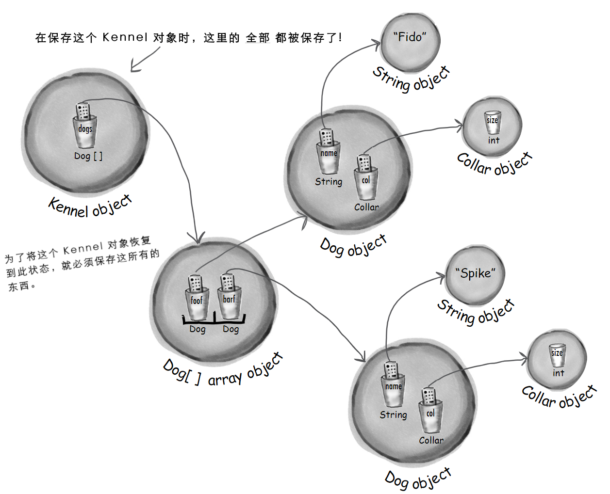
图 7 - 对象保存时涉及实例变量为对象引用的情形
序列化保存了完整的 对象图面（object graph）。自所保存对象开始，全部的实例变量引用到对象，都会被序列化。
在希望所编写的类可被序列化时，就要实现 Serializable 接口
If you want your class to be serializable, implement Serializable
由于 Serializable 接口没有要实现的方法，因此又被称作 标记 或者说 标签 接口（The Serializable interface is known as a marker or tag interface, because the interface doesn't have any methods to implement）。 其唯一目的，就是通告实现了他的类，是 可被序列化的（serializable）。也就是说，Serializable 类型的类，可通过序列化机制加以保存（In other words, objects of that type are saveable through the serialization mechanism）。在有超类是可序列化的类时，那么其子类将自动成为可序列化类，即使其子类并未显示声明 implements Serializable。（这也是接口一贯的 运作 方式。在某个类的超类 IS-A Serializable时，那么这个类同样是 Serializable的）。
// 这里传递给 writeObject() 方法的参数，必须 实现了 Serializable
// 接口，否则在运行时就会失败
objectOutputStream.writeObject(myBox);
--
package com.xfoss.learningJava;
// 接口 Serializable 是在 java.io 包中，因此要需要这个 import 语句
import java.io.*;
// 虽然没有要实现的方法，但在写下这里的 "implements Serializable"
// 时，就等于告诉了JVM，“可对这种类型的对象进行序列化。”
public class Box implements Serializable {
// 这两个值将会被保存起来
private int width;
private int height;
public void setWidth (int w) {
width = w;
}
public void setHeight (int h) {
height = h;
}
public static void main (String[] args) {
Box box = new Box();
box.setWidth(50);
box.setHeight(20);
// I/O 操作可能抛出异常。
try {
// 若存在一个名为“Box.ser”的文件，那么就连接到这个文件。而若不
// 存在，就构造一个新的名为 “Box.ser” 的文件。
FileOutputStream fStream = new FileOutputStream("Box.ser");
// 构造一个链接到连接流 FileOutputStream 的 ObjectOutputStream 对象
// 让他写入对象 box。
ObjectOutputStream oStream = new ObjectOutputStream(fStream);
oStream.writeObject(box);
oStream.close();
} catch (Exception ex) {ex.printStackTrace();}
}
}
运行这段代码将创建出一个 Box.ser 的文件，其内容为：
¬í�sr�com.xfoss.learningJava.Boxý ¼%
~FH�I�heightI�widthxp������2
以后不管运行多少次，Box.ser 的内容都不会改变。
序列化就是全部，或者全无。
Serialization is all or nothing.
设想一下如果对象的某些状态没有正确保存，会发生什么呢？
图 8 - 序列化对象恢复的风险
要么整个的对象图面被正确序列化，但凡有一个差错，那么就算作序列化失败（Either the entire object graph is serialized correctly or serialization fails）。
在对一个 Pond 对象进行序列化时，若他 Duck 实例变量拒绝被实例化（因为没有对 Serializable 接口进行实现），那么就无法实例化这个 Pond 对象。
package com.xfoss.learningJava;
import java.io.*;
// Pond 的对象，可被序列化
public class Pond implements Serializable {
// 类 Pond 有一个实例变量，是到一个 Duck
// 对象的引用。
private Duck duck = new Duck();
public static void main (String[] args) {
Pond pond = new Pond();
try {
FileOutputStream fStream = new FileOutputStream("Pond.ser");
ObjectOutputStream oStream = new ObjectOutputStream(fStream);
// 在对 pond （一个 Pond 的对象）进行序列化时，该对象
// 的 Duck 实例变量会自动被序列化。
oStream.writeObject(pond);
oStream.close();
} catch (Exception ex) { ex.printStackTrace(); }
}
}
// 然而！！Duck（在 com.xfoss.learningJava.UseADuck中声明） 并
// 不是可序列化的！Duck 类并没有实现 Serializable, 因此在对
// Pond 对象进行序列化时，由于该 Pond 对象的 Duck 实例变量
// 无法被保存，而失败。
将报出以下错误：
Quack... My size is 32, my number is 1
java.io.NotSerializableException: com.xfoss.learningJava.Duck
at java.base/java.io.ObjectOutputStream.writeObject0(ObjectOutputStream.java:1185)
at java.base/java.io.ObjectOutputStream.defaultWriteFields(ObjectOutputStream.java:1553)
at java.base/java.io.ObjectOutputStream.writeSerialData(ObjectOutputStream.java:1510)
at java.base/java.io.ObjectOutputStream.writeOrdinaryObject(ObjectOutputStream.java:1433)
at java.base/java.io.ObjectOutputStream.writeObject0(ObjectOutputStream.java:1179)
at java.base/java.io.ObjectOutputStream.writeObject(ObjectOutputStream.java:349)
at com.xfoss.learningJava.Pond.main(Pond.java:15)
图 9 - 非 Serializable 对象无法被序列化的麻烦
在实例变量无法（或不应）被保存时，就要把他标记为 瞬态 实例变量（Mark an instance variable as transient if it can't (or shouldn't) be saved）。
若希望某个实例变量跳过对象的序列化过程，那么就要使用 transient 关键字，对该变量进行标记。
import java.net.*;
class Chat implements Serializable {
// 关键字 transient, 说的是 “在序列化期间不要
// 保存这个变量，只要跳过他就好。”
transient String currentID;
// 在序列化期间，变量 userName 将被保存为该对象
// 的一部分。
String userName;
// 其他代码
}
在有着一个因为本身不是可序列化，而无法被保存的实例变量时，就可以使用 transient 关键字对那个变量进行标记，从而序列化过程就会精准地跳过他。
然而一个变量无法被序列化的原因又究竟为何呢？其中可能简单地就是，那个类的设计者仅仅是 忘了 把其构造为对 Serializable 接口进行实现。或者由于对象依赖于一些特定于运行时信息，因此就直接无法保存。虽然 Java 类库中绝大多数物件都是可序列化的，但对于诸如网络连接、线程或文件对象等物件，是无法保存的。这些物件，全都依赖于（特定于）某种特别运行时 “体验”。也就是说，这些对象是以专为所编在程序，在特定平台上、在特定的JVM中的一次特定运行，而进行初始化的。一旦程序关闭，就没有了将这些物件，以任何有意义的方式，再复活过来的办法；这些对象，每次都要从头创建出来（So why would a variable not be seralizable? It could be that the class designer simply forgot to make the class implement Serializable. Or it might be because the object relies on runtime-specific information that simply can't be saved. Although most things in the Java class libraries are serializable, you can't save things like network connections, threads, or file systems. They're all dependent on (and specific to) a particular runtime 'experience'. In other words, they're instantiated in a way that's unique to a particular run of your program, on a particular platform, in a particular JVM. Once the program shuts down, there's no way to bring those thins back to life in any meaningful way; they have to be created from scratch each time）。
答疑
- 既然序列化如此重要，那为何不是全部类都默认可序列化呢？为何类
Object没有实现Serializable接口，这样所有子类就自动地可被序列化了呀？
尽管绝大多数类都会，且都应对
Serializable接口进行实现，不过仍然可以选择选择不予实现此接口。对于所设计的类，必须逐一审视，在是否要通过实现Serializable来 “开启” 序列化功能上，作出慎重决定。那么首先，如果序列化作为默认了，又该怎样把他关掉呢？接口就意味着功能，而非功能的消减（Interfaces indicate functionality, not a lack of functionality），那么如果这样来告诉外部世界某个对象无法保存：implements NonSerializable，多态机制模型就会无法正确运作了。
- 究竟为何要编写一个不可序列化的类？
编写不可序列化类的理由极少，比如在不希望某个口令对象被存储起来地方，如果将其编写为可序列化对象而被保存了起来，那么就会有着安全问题。有比如在有着某个由于其关键实例变量就是不可序列化的他们本身，而保存起来没什么意义的类时，那么这个时候如果再把他们构造为可序列化的类，就没有什么有用处，多此一举了（There are very few reasons, but you might, for example, have a security issue where you don't want a password object stored. Or you might have an object that makes no sense to save, because its key instance variables are themselves not serializable, so there's no useful way for you to make your class serializable）。
- 在所使用的类不是可序列化的，又没有什么好的理由去来让这个类不可序列化（仅仅由于这个类的设计者忘记给这个类实现
Serializable接口，或由于其设计者的愚蠢），那么可以对这个“不良”的类进行子类化，从而将子类构造为可序列化的吗？
当然可以！在类本身为可扩展时（即非
final），就可以构造一个可序列化子类，并只要在那些期望那个超类类型的地方，用这个子类去替换即可。（请记住，多态机制是允许这样做的。）不过这又提出了另一个有趣的问题：超类不可序列化究竟意味着什么呢？
- 你所提到的：从不可序列化类构造出可序列化类，意味着什么？
这里就要先看看在类解序列化时，会发生什么，（后面很快就会讨论到这个问题）。简而言之，在对象被解序列化且对象的超类为不可序列化的情况下，那么其超类的构造器就会运行，从而创建出那种类型的一个对象来。在没有让某个类成为不可序列化类的适当理由的情况下，那么构造一个可序列化的子类，将是一种良好的做法（In a nutshell, when an object is deserialized and its superclass is not serializable, the superclass constructor will run just as though a new object of that type were bebing created. If there's no decent reason for a class to not be serializable, make a serializable subclass might be a good solution）。
- 噢！我是不是发现了了不起的东西......只要使某个变量成为“瞬态（
transient）”，就意味着在序列化过程中该变量的值被跳过。那么这个瞬态变量究竟发生了什么？这里通过将不可序列化实例变量构造为瞬态变量的方式，解决了实例变量不可序列化问题，然而在将其所属对象复活时，难道就不再需要那个瞬态变量了吗？也就是说，难道整个序列化操作的目的，不就是保留对象的状态吗？
是的，这确实是个问题，不过幸运的是，有办法解决这个问题。在对某个对象进行序列化操作时，不论瞬态引用实例变量在保存时的值为何，他们都将将恢复到
null。这就意味着连接到那个特定实例变量的整个对象图面，都不会被保存。显然，这样处理会有坏处，因为可能需要那个变量为非空值（Yes, this is an issue, but fortunately there's a solution. If you serialize an object, a transient reference instance variable will be brought back asnull, regardless of the value it had at the time it was saved. That means the entire object graph connected to that particular instance variable won't be saved. This could be bad, obviously, because you probably need anon-nullvalue for that variable）。这个时候就有两个选项：
在将对象恢复过来时，将那个
null的实例变量，重新初始化回某种默认状态。在所解序列化的对象不依赖特定值的那个瞬态变量时，这种做法是可行的。也就是比如对于Dog对象，带有一个Collar的属性，就比较重要，而或许所有的Collar对象都是同样的，那么在给到所有复活过来的Dog一个全新的Collar，就无关紧要；没有人会知道其中的差别（When the object is brought back, reinitialize thatnullinstance variable back to some default state. This works if your deseralized object isn't dependent on a particular value for that transient variable. In other words, it might be important that theDoghave aCollar, but perhaps allCollarobjects are the same so it doesn't matter if you give the resurrectedDoga brand newCollar; nobody will know the difference）。在瞬态变量的取值确实至关重要时（比如每个
Dog对象的瞬态变量Collar的颜色与式样都不相同），那么就需要对Collar的关键属性值进行保存，并在复活Dog对象时，使用这些关键属性值来再造一个与原先一致的全新Collar对象出来。
- 若对象图面中的两个对象引用变量，指向了相同对象，这个时候会怎样呢？比如说，在
Kennel中有两个不同的Cat对象引用变量，但这两个Cat引用变量都是同一具体对象的引用。那么那个具体Cat对象会被保存两次吗？我倒希望不会。
非常棒的问题！Java的序列化特性是足够聪明的，可以了解到图面中那两个对象是同样的。在图面中有两个同样对象时，那么就只有其中一个会被保存，而在解序列化过程中，所有到那个对象引用，都会被恢复出来。
解序列化：恢复对象
Deserialization: restoring an object
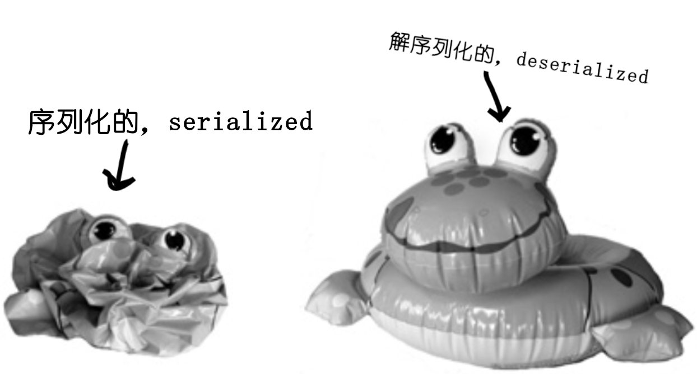
图 10 - 序列化对象与解序列化对象
给对象进行序列化的关键，就是在往后某一天，与不同JVM的“运行”里（甚至在不同于对象被序列化时所运行的同一JVM里），可以把对象恢复到其原本状态。解序列化与序列化十分相像，只是过程相反。
-
构造一个
FileInputStream// 构造一个 FileInputStream 对象。这里的 FileInputStream 就 // 知道怎样去连接上要给既有的文件。 // // 在文件 "MyGame.ser" 不存在时，将得到一个异常。 FileInputStream fileStream = new FileInputStream("MyGame.ser"); -
构造一个
ObjectInputStream// ObjectInputStream 允许读取对象，但他无法直接连接到某个 // 文件。他需要被链接到一个连接性流，这个示例中就是链接到 // 的一个 FileInputStream。 ObjectInputStream os = new ObjectInputStream(fileStream) -
读取那些对象
// 在每次写下 readObject() 方法时，就获得了流中的下一个 // 对象。因此将以这些对象被写入的同样顺序，把这些对象读取 // 回来。若尝试读取多于写入的对象时，就会得到一个大大的异常。 Object one = os.readObject(); Object two = os.readObject(); Object three = os.readObject(); -
对读取到的这些对象，进行类型强制转换
// readObject() 方法的返回值是类型 Object 的（就跟 // ArrayList那里的情况一样），因此就必须将其强制 // 转换回所知的真实类型。 GameCharacter elf = (GameCharacter) one; GameCharacter troll = (GameCharacter) two; GameCharacter magician = (GameCharacter) three; -
关闭
ObjectInputStream// 关闭了顶部的流也就关闭了其下的那些流，因此 FileInputStream // （以及那个文件）就会自动关闭。 os.close();
解序列化期间发生了什么？
What happens during deserialization?
在对象被解序列化时，JVM尝试通过在内存堆上构造一个新的、与对象在被序列化时有着同样状态的对象，来把对象复活过来。当然，这是排除了那些瞬态变量的，那些瞬态变量要么以null值（对于那些对象的引用变量）再现，要么以默认原生值再现。
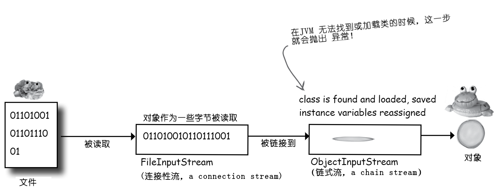
图 11 - 对象解序列化的过程
-
从流 读取到 对象；
-
JVM推断出对象的 类类型（通过序列化的对象中存储的信息，The JVM determines (through info stored with the serialized object) the object's class type）；
-
JVM 尝试 找到并加载 该对象的 类。若 JVM 无法找到并/或加载该类，那么 JVM 就会抛出一个异常，同时解序列化宣告失败（The JVM attempts to find and load the object's class. If the JVM can't find and/or load the class, the JVM throws an exception and the deserialization fails）；
-
在内存堆上，一个新的对象被分配到空间，但 被序列化对象的构造器并 不会 运行！显然，若该构造器运行，就会把那个对象的状态，恢复到其原本的“新”状态，不过这并不是这里所想要的。这里要的时对象被恢复到他被序列化时所具有的状态，而不是他最开始被创建出时的状态（A new object is given space on the heap, but the serialized object's constructor doess NOT run! Obviously, if the constructor ran, it would restore the state of the object back to its original 'new' state, and that's not what we want. We want the object to be restored to the state it had when it was serialized, not when it was first created）;
-
若该对象在其继承树往上的某处，有着一个不可序列化类，那么随着这个不可序列化类之上的其他全部构造器的运行（即使这些往上的类是可序列化的）， 那个不可序列化类的构造器也将运行起来。一旦构造器链式运行起来，就无法停止了，这就意味着从第一个不可序列化类开始的所有超类，都会重新初始化出他们的状态（If the object has a non-serializable class somewhere up its inheritance tree, the constructor for that non-serializable class will runn along with any constructors above that(even if they're serializable). Once the constructor chaining begins, you can't stop it, which means all superclasses, beginning with the first non-serializable one, will reinitialize their state）;
-
对象的 那些实例变量，都被赋予到来自序列化状态时的值。那些瞬态变量，被赋予对象引用变量的默认值
null，以及原生类型下相应的默认值（0、false等等）。
答疑
- 为何类没有作为对象的一部分，被保存起来？那样的话，就不存在类不会被找到的问题了。
确实，Java/JVM 的设计者们原本可以让序列化特性以那种方式运作。不过那样会造成巨大的浪费和开销。相比于运用序列化特性，将对象写到本地硬盘上的某个文件这种不是那么拮据的操作，那么通过序列化特性而通过网络来发送对象，就会困难得多。若把类绑定到各个被序列化（可传送）的对象，那么对带宽的要求就要比现在大得多（Sure, they could have made serialization work that way. But what a tremendous waste and overhead. And while it might not be such a hardship when you're using serialization is also used to send objects over a network connection. If a class was bundled with each serialized (shippable) object, bandwidth would become a much larger problem than it already is）。
然而对于那些被序列化来透过网络传输的对象，实际上有着一种，可将此种序列化对象 “盖戳上” 一个，表示在何处可以找到他的类的URL的机制。这个机制在 Java 的远程方法调用中有运用到，从而可以将序列化对象，作为方法参数的一部分进行传送，这个时候如果接收到的调用的JVM没有这个类，那么JVM就可以使用该URL，来从网络获取到这个类并进行加载，此过程全部是自动进行的。（在第 17 章将讨论到RMI，For objects serialized to ship over a network, though, there actually is a mechanism where the serialized object can be 'stamped' with a URL for where its class can be found. This is used in Java's Remote Method Invocation(RMI) so that you can send a serialized object as part of, say, a method argument, and if the JVM receiving the call doesn't have the class, it can use the URL to fetch the class from the network and load it, all automatically. (We'll talk about RMI in chapter 17.)）
- 那些静态变量呢？他们会被序列化吗？
不会。请记住，静态就表示“每个类一个”，而不是“每个对象一个”。静态变量不被保存，且在某个对象被解序列化时，该对象的类 当前 有什么静态变量，那么该对象就会有什么静态变量。谨记：不要构造那些对动态改变的静态变量有依赖的可序列化对象！那样的话在恢复出对象时，就会出现与原先不一致的情况（Nope. Remember, static means "one per class" not "one per object". Static variables are not saved, and when an object is deserialized, it will have whatever static variable its calss currently has. The moral: don't make serializable objects dependent on a dynamically-changing static variable! It might not be the same when the object comes back）。
游戏角色的保存与恢复
Saving and restoring the game characters
package com.xfoss.learningJava;
import java.io.*;
import com.xfoss.Utils.*;
public class GameSaverTest {
public static void main (String[] args) {
// 构造一些角色......
GameCharacter one = new GameCharacter(50, "Elf", new String[] {"bow", "sword", "dust"});
GameCharacter two = new GameCharacter(200, "Troll", new String[] {"bare hands", "big ax"});
GameCharacter three = new GameCharacter(120, "Magician", new String[] {"spells", "invisibility"});
XPlatformThings th = new XPlatformThings();
String dataDir = th.getWorkingDir("learningJava");
File dir = new File(dataDir);
if(!dir.exists()) dir.mkdirs();
String serFile = String.format("%s/GameCharacter.ser", dataDir);
// 设想对这些角色进行操作的代码，可能改变这些角色的状态
try {
ObjectOutputStream os = new ObjectOutputStream(new FileOutputStream(serFile));
os.writeObject(one);
os.writeObject(two);
os.writeObject(three);
os.close();
} catch (IOException ex) {ex.printStackTrace();}
// 这里把这些角色设置为 null, 这样就无法在内存堆上访问到这些对象了
one = null;
two = null;
three = null;
try {
// 现在从文件把这些角色读取回来......
ObjectInputStream is = new ObjectInputStream(new FileInputStream(serFile));
GameCharacter oneRestore = (GameCharacter) is.readObject();
GameCharacter twoRestore = (GameCharacter) is.readObject();
GameCharacter threeRestore = (GameCharacter) is.readObject();
is.close();
// 检查一下这样的保存与读取是否可行。
System.out.format("One's type: %s\n", oneRestore.getType());
System.out.format("Two's type: %s\n", twoRestore.getType());
System.out.format("Three's type: %s\n", threeRestore.getType());
} catch (Exception ex) {ex.printStackTrace();}
}
}
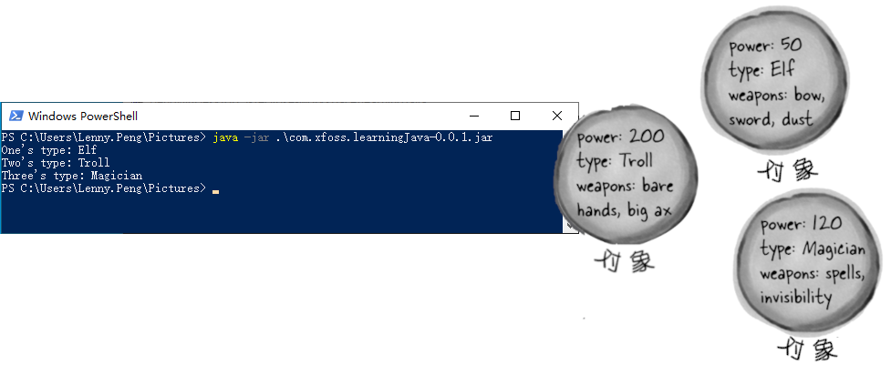
图 12 - 对象序列化实例运行效果
类 GameCharacter
// 这是一个简单的仅用于测试序列化操作的类，同时这里也并没有一个
// 真正的游戏，不过实现游戏的过程，可以自己去完成。
package com.xfoss.learningJava;
import java.io.*;
public class GameCharacter implements Serializable {
int power;
String type;
String [] weapons;
public GameCharacter (int p, String t, String [] w) {
power = p;
type = t;
weapons = w;
}
public int getPower () {
return power;
}
public String getType () {
return type;
}
public String getWeapons () {
String weaponList = "";
for (int i = 0; i < weapons.length; i++) {
String.format("%s %s", weaponList, weapons[i]);
}
return weaponList;
}
}
对象序列化的重点
Object Serialization, BULLET POINTS
- 通过将对象序列化，可保存对象的状态；
- 要序列化某个对象，就需要一个
ObjectOutputStream（来自java.io包） 对象； - 流要么是连接流，要么是链式流；
- 连接流可表示到源或目的地，典型的就是某个文件、网络套接字，或控制台，的一个连接；
- 链式流无法连接到源或目的地，而必须链接到连接（或其他）流；
- 要将对象序列化到文件，就要构造一个
FileOutputStream对象，并将这个对象链接进入一个ObjectOutputStream; - 调用
ObjectOutputStream对象上的writeObject(theObject)方法，来对这个theObject进行序列化。这里无需调用FileOutputStream上的那些方法； - 对象要被序列化，就必须实现
Serializable接口。在该类的超类实现了Serializable，那么进行这个子类没有特别声明 implements Serializable，也自动成为可被序列化； - 在对象被序列化时，他的整个对象图面都被序列化了。那就意味着被该序列化对象的那些实例变量所引用的全部对象，以及这些被引用对象所应用的全部对象......等等都被序列化了；
- 若图面中有任何对象不可被序列化，那么在运行时就会抛出异常，除非指向这个不可序列化对象的实例变量被跳过；
- 若希望序列化操作跳过某个变量，使用关键字
transient标记这个变量即可。这个被transient关键字标记过的变量，将被恢复到null（对于对象引用变量），或默认值（对于原生类型变量）； - 在解序列化过程中，对象图面中所有对象的类，必须对JVM可用；
- 读取对象（使用
readObject()方法）是以所读取的那些对象原先写入的顺序读出； readObject()方法返回值类型为Object类型，因此解序列化出的对象，必须被强制转换（cast）到他们真实类型；- 静态变量不会被序列化！将静态变量作为特定对象状态的一部分进行保存没有意义，因为那种类型的所有对象，都共享着仅仅这一个值 -- 就是类中的那个；
写入一个字符串到文本文件
Writing a String to a Text File
经由序列化特性保存对象，是在某个Java程序的不同运行之间，进行数据保存与恢复的最容易方式（Saving objects, through serialization, is the easiest way to save and restore data between runnings of a Java program）。不过有时候仍需要把数据保存到普通老式文本文件。设想有Java程序必须把数据，写入到某个其他（极有可能为非Java的）程序需要读取的简单文本文件。比如说，有这样一个Java编写的、获取用户输入到浏览器的表单数据的小服务程序（a servlet），并把这些表单数据，写入到一个其他程序也会加载到某个电子表单进而加以分析的文本文件。
写入文本数据（实际上是一个字符串），跟写入对象类似，只是写入的是一个字符串而不再是对象，还有使用的是 FileWriter而不是FileOutputStream（并且也不是链接到 ObjectOutputStream的）。
图 13 - 以文本文件方式保存对象数据
要写入序列化对象：
objectOutputStream.writeObject(someObject);
而要写入一个字符串：
fileWriter.write("My first String to save");
// 这里需要 java.io 包来提供到 FileWriter 类
import java.io.*;
class WriteAFile {
public static void main (String[] args) {
// 所以 I/O 操作，都必须在一个 try/catch 代码块中。其中的
// 全部操作都能抛出 IOException 异常！！
try {
// 如果这个 “Foo.txt” 文件不存在，FileWriter就会创建他。
FileWriter writer = new FileWriter("Foo.txt");
// write() 方法取的是一个字符串参数
writer.write("hello foo!");
// 在完成写入后要关闭这个 FileWriter 对象！
writer.close();
} catch (IOException ex) {
ex.printStackTrace();
}
}
}
文本文件示例：e-Flashcards
Text File Example: e-Flashcards
还记得上学时用过的那些学习卡片（flashcards）吗？那种卡片一面有个问题，背后就是问题的答案。虽然这些学习卡片对于掌握理解某些内容没有帮助，但用于简单操练和死记硬背，他们是无可比拟的。尤其是在必须把某个事实刻入脑中的时候。同时这样的卡牌，用于益智猜谜竞赛中也非常棒。
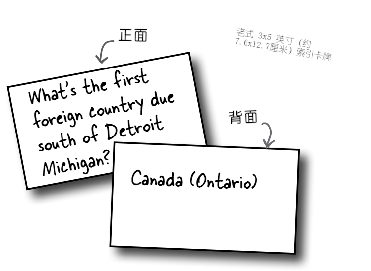
图 14 - 老式3x5索引卡牌
接下来就要构造以恶有三个类的电子版卡牌：
-
类
QuizCardBuilder，用于一套电子卡牌的创建及存储的一个简单创作工具； -
类
QuizCardPlayer，一个可加载进一套电子卡牌，并给用户玩这套卡牌的回放引擎； -
类
QuizCard，一个表示卡牌数据的简单类。这里会贯穿卡牌构建器与卡牌播放器的代码，而把QuizCard类留给读者自己取构造，使用下表：
QuizCard |
|---|
QuizCard(q, a) |
question answer |
getQuestion() getAnswer() |
图 15 - QuizCardBuilder
有着带有用于把当前这套卡牌，保存到文本文件的 “保存” 选项的 “文件” 菜单。
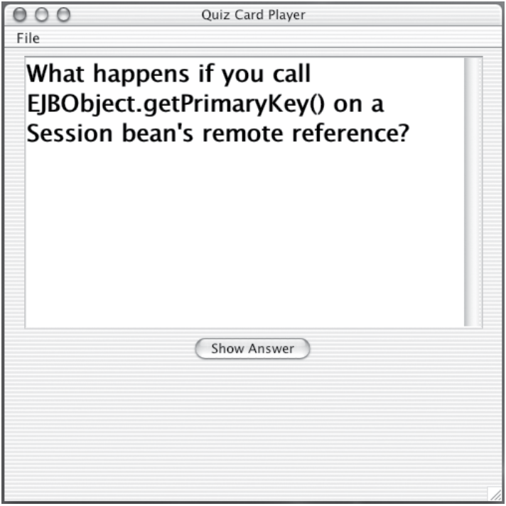
图 16 - QuizCardPlayer
有着用于从文本文件加载一套卡牌的“加载”选项的“文件”菜单。
QuizCardBuilder （代码大纲）
public class QuizCardBuilder {
// 构建并显示GUI，包括事件收听者的构造与注册。
public void go () {
// GUI的构建及显示
}
// 内部类
private class NextCardListener implements ActionListener {
// 当用户点击 “下一卡片” 按钮时，触发这个事件处理
// 方法；表示用户希望把那个卡片存储在清单中，并
// 开始制作一张新卡片。
public void actionPerformed (ActionEvent ev) {
// 将当前卡牌添加到清单并清空那两个文本区
}
}
// 内部类
private class SaveMenuListener implements ActionListener {
// 在用户选择了文件菜单中的 “保存” 菜单项时触发
// 这个事件处理方法；表示用户希望以“套”的形式
// （比如，“量子力学卡套（Quantum Mechanics Set）”，“好莱坞
// 趣闻（Hollywood Trivia）”，“Java规则集”等等），保存当前
// 清单中的全部卡片。
public void actionPerformed (ActionEvent ev) {
// 拉起一个文件对话框
// 让用户命名并保存这套卡片
}
}
// 内部类
private class NewMenuListener implements ActionListener {
// 在点选了文件菜单中的“新建”菜单项后触发这个事件处理
// 方法；表示用户希望开始创建一套全新卡片（因此就要
// 情况卡片清单及文本区）。
public void actionPerformed (ActionEvent ev) {
// 清空卡片清单，还要情况那两个文本区
}
}
// 此方法被 SaveMenuListener 调用；完成具体的文件写入。
private void saveFile(File file) {
// 对卡片清单进行遍历，并把各个卡片，以可解析的方式（也就是
// 在卡片各个部分之间有明确的间隔），写入到一个文本文件
}
}
QuizCardBuilder 代码
package com.xfoss.QuizCard;
import java.util.*;
import java.awt.event.*;
import javax.swing.*;
import java.awt.*;
import java.io.*;
import java.net.*;
public class QuizCardBuilder {
private JTextArea question;
private JTextArea answer;
private ArrayList<QuizCard> cardList;
private JFrame frame;
public static void main (String[] args) {
QuizCardBuilder builder = new QuizCardBuilder();
builder.go();
}
private void go() {
// 构建出 GUI
//
// 这里全是 GUI 的代码。没有什么特别的，不过可能会
// 看看这里的 MenuBar、Menu及 MenuItems 等代码。
frame = new JFrame("测试卡构建器");
frame.setDefaultCloseOperation(JFrame.EXIT_ON_CLOSE);
URL icoURI = getClass().getResource("/images/flashcards.png");
ImageIcon ico = new ImageIcon(icoURI);
frame.setIconImage(ico.getImage());
JPanel mainPanel = new JPanel();
Font bigFont = new Font("sanserif", Font.BOLD, 24);
question = new JTextArea(6, 20);
question.setLineWrap(true);
question.setWrapStyleWord(true);
question.setFont(bigFont);
JScrollPane qScroller = new JScrollPane(question);
qScroller.setVerticalScrollBarPolicy(ScrollPaneConstants.VERTICAL_SCROLLBAR_ALWAYS);
qScroller.setHorizontalScrollBarPolicy(ScrollPaneConstants.HORIZONTAL_SCROLLBAR_NEVER);
answer = new JTextArea(6, 20);
answer.setLineWrap(true);
answer.setWrapStyleWord(true);
answer.setFont(bigFont);
JScrollPane aScroller = new JScrollPane(answer);
aScroller.setVerticalScrollBarPolicy(ScrollPaneConstants.VERTICAL_SCROLLBAR_ALWAYS);
aScroller.setHorizontalScrollBarPolicy(ScrollPaneConstants.HORIZONTAL_SCROLLBAR_NEVER);
JButton nextBtn = new JButton("下一卡片");
nextBtn.addActionListener(new NextCardListener());
cardList = new ArrayList<QuizCard> ();
JLabel qLabel = new JLabel("问题：");
JLabel aLabel = new JLabel("答案：");
mainPanel.add(qLabel);
mainPanel.add(qScroller);
mainPanel.add(aLabel);
mainPanel.add(aScroller);
mainPanel.add(nextBtn);
// 这里构造了一个菜单栏，一个文件菜单，随后把
// "新建" 与 “保存” 菜单项放入到文件菜单。然后
// 把这个菜单添加到菜单栏，并告诉视窗框使用这个
// 菜单栏。菜单项可以发起 ActionEvent 事件。
JMenuBar menuBar = new JMenuBar();
JMenu fileMenu = new JMenu("文件（F）");
JMenuItem newMenuItem = new JMenuItem("新建（N）");
newMenuItem.addActionListener(new NewMenuItemListener());
JMenuItem saveMenuItem = new JMenuItem("保存（S）");
saveMenuItem.addActionListener(new SaveMenuItemListener());
fileMenu.add(newMenuItem);
fileMenu.add(saveMenuItem);
menuBar.add(fileMenu);
frame.setJMenuBar(menuBar);
frame.getContentPane().add(BorderLayout.CENTER, mainPanel);
frame.setSize(480, 640);
frame.setVisible(true);
}
private class NextCardListener implements ActionListener {
public void actionPerformed (ActionEvent ev) {
if(question.getText().length() > 0 && answer.getText().length() > 0) {
QuizCard card = new QuizCard(question.getText(), answer.getText());
cardList.add(card);
clearCard();
}
question.requestFocus();
}
}
private class NewMenuItemListener implements ActionListener {
public void actionPerformed (ActionEvent ev) {
cardList.clear();
clearCard();
}
}
private class SaveMenuItemListener implements ActionListener {
public void actionPerformed (ActionEvent ev) {
QuizCard card = new QuizCard(question.getText(), answer.getText());
cardList.add(card);
// 这里拉起（bring up） 一个文件对话框并等待用户选择对话框
// 中的 “保存”按钮。文件对话框的全部导航及文件选择工作等，都是
// 由 JFileChooser 替咱们完成的！就这么容易。
JFileChooser fileSave = new JFileChooser();
fileSave.showSaveDialog(frame);
saveFile(fileSave.getSelectedFile());
}
}
private void clearCard () {
question.setText("");
answer.setText("");
question.requestFocus();
}
// 正是这个方法，完成文件写入（由 SaveMenuListener 的事件处理器调用）。
// 这里的参数就是那个用户要保存的 'File' 对象。在后面就会讨论到类 File。
private void saveFile (File f) {
try {
// 这里把一个 BufferedWriter 对象，链接到一个新创建的 FileWriter
// 对象上，以令到写入更加高效（稍后不久就会讨论到这个问题）。
BufferedWriter writer = new BufferedWriter(new FileWriter(f));
// 对这个 QuizCard 的 ArrayList 进行遍历，并将这些卡片写出来，每行
// 一张卡片，其中的问题与答案之间用 “/” 分隔开，之后每行在加上
// 一个另起一行字符（“\n”）
for (QuizCard c:cardList) {
if(c.getQuestion().length() > 0 && c.getAnswer().length() > 0)
writer.write(String.format("%s/%s\n", c.getQuestion(), c.getAnswer()));
}
writer.close();
} catch (IOException ex) {
System.out.println("无法将卡片清单 cardList 写出");
ex.printStackTrace();
}
}
}
class QuizCard {
private String question;
private String answer;
public QuizCard(String q, String a) {
question = q;
answer = a;
}
public String getQuestion () {return question;}
public String getAnswer() {return answer;}
}
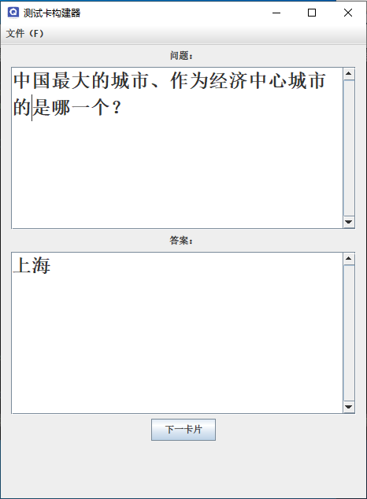
图 17 - QuizCardBuilder运行效果
类 java.io.File
类 java.io.File 代表（represents） 磁盘上的某个文件，但并不具体表示那个文件的 内容（contents）。不明白？把 File 对象当作某个文件的 路径名称（pathname） （或者甚至某个 目录（directory）），而非那个真实文件本身就好。类 File 本身就不具有比如读取和写入这样的方法。使用 File 对象来表示磁盘文件，与仅使用一个字符串来表示相比，一个非常有用的地方，就在于这样做是更加安全的方式。那些构造器接收字符串文件名的大多数类（诸如 FileWriter 或 FileInputStream），同时也能接收 File 对象。可构建出一个 File 对象，而通过这个对象，完成诸如路径有效性验证等检查，并于随后把这个文件对象，提供给 FileWriter 或 FileInputStream。
File对象表示的，是磁盘上文件或目录的名字及路径，比如：
/User/Kathy/Data/GameFile.txt但
File对象并不代表文件 中的 数据，也并未给到对文件中数据的访问！
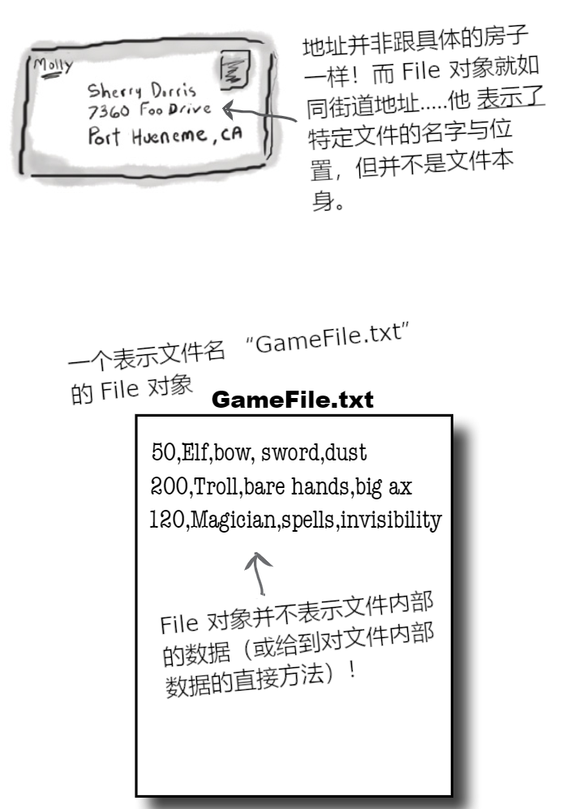
图 18 - File对象与磁盘文件及文件内部数据
使用 File 对象可以完成的一些事情
-
构造一个表示既有文件的
File对象File f = new File("MyCode.txt"); -
新建一个目录
File dir = new File("Chapter7"); dir.mkdir(); -
列出某个目录的内容
if (dir.isDirectory()) { String[] dirContents = dir.list(); for (int i = 0; i < dirContents.length; i++) { System.out.println(dirContents[i]); } } -
获取文件或目录的绝对路径
System.out.println(dir.getAbsolutePath()); -
删除某个文件或目录（删除成功时返回
true）boolean isDeleted = f.delete();
缓存之美
The beauty of buffers
没有缓存器，就如同逛超市没有购物推车。就不得不把买的东西一件件地搬到车上，一次拿一个汤罐头或一卷厕纸。
图 19 - 缓存器与购物推车
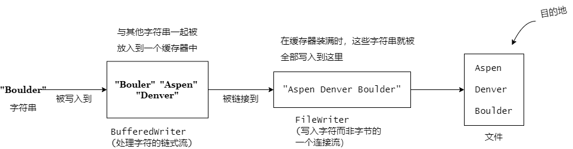
图 20 - 缓存器在写入文件中的作用
// 请注意这里甚至不需要保留一个到FileWriter 对象的引用（注：即并没有
// 为这个对象设置一个变量）。这里只关心这个 BufferedWriter，因为正是
// 要调用这个对象上的方法，且在关闭这个 BufferedWriter 时，这个对象
// 同时会照顾到该数据写入链条上的其余部分。
BufferedWriter writer = new BufferedWriter(new FileWriter(aFile));
缓存酷的地方，在于比起不使用缓存，他们的效率高很多。可通过调用 FileWriter对象上的 write(someString)，单独使用 FileWriter 来写入某个文件，不过 FileWriter 是每次一个地写入传递给他的东西。而相比于操作内存中的数据，每次去访问磁盘就是件十分耗时的事情，由于这个原因，直接使用 FileWriter 每次一个地写入，就带来我们所不希望的开销。而通过在 FileWriter 上连接一个 BufferedWriter时，这个 BufferedWriter就会在缓存放满之前，把要写入的东西暂时留存起来。只有在缓存充满时，才会告诉 FileWriter 往磁盘上的文件写入。
若希望在缓存尚未充满前就要发送其中的数据，可是可以的。只需刷新缓存即可（Just flush it）。调用 writer.flush() 就是说，“发送缓存中的内容，立即！”
从文本文件读取数据
Reading from a Text File
从文件读取文本是简单的，不过这里要使用一个 File 对象来表示那个文件，使用一个 FileReader 来完成实际读取，还要使用一个BufferedReader，来令到读取更具效率。
读取是通过在一个 while 的循环中，去读取那些行进行，在 readLine() 返回结果为 null 时，终止这个循环。这也正是数据读取（针对几乎所有非序列化对象的那些数据）最常见的方式：在 while 循环（实际上是while 循环的 条件测试）中，进行数据读取，在没有东西要读取时循环终止（因为不论使用何种读取方法，其结果都是 null，故直到已经读取完毕）。
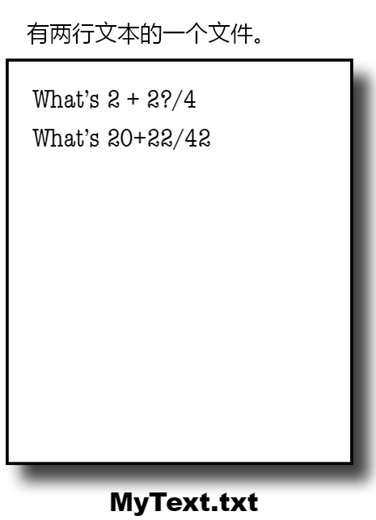
图 21 - 一个有着两行文本的文件
package com.xfoss.learningJava;
import java.io.*;
import java.util.Objects;
import com.xfoss.Utils.*;
public class ReadFile {
public static void main (String[] args) {
XPlatformThings xpt = new XPlatformThings();
String wd = xpt.getWorkingDir("learningJava");
try {
File f = new File(String.format("%s/data/MyText.txt", wd));
// 这里的FileReader，时用于字符的、连接到某个文本文件的连接流
FileReader fReader = new FileReader(f);
// 这里将这个 FileReader 连接到一个 BufferedReader，目的是
// 更高效的读取数据。这样就只会在缓存为空时（因为这个程序要
// 读取文件中的全部数据），才回到文件去读取。
BufferedReader reader = new BufferedReader(fReader);
// 构造一个字符串变量，用来在每次读取行时，留存住这个行
String line = null;
// 这里讲了 “读取一行文本，并将其赋值给这个字符串变量'line'.
// 在那个变量不为 'null'时（由于在这之前还有东西可读）把刚
// 读取到的那行打印出来。”
//
// 或者以另外一种讲法，“在仍有文本行可读取的情况下，对这些文本
// 行加以读取并打印出来。”
while(!Objects.isNull(line = reader.readLine())) {
System.out.println(line);
}
reader.close();
} catch (Exception ex) {}
}
}
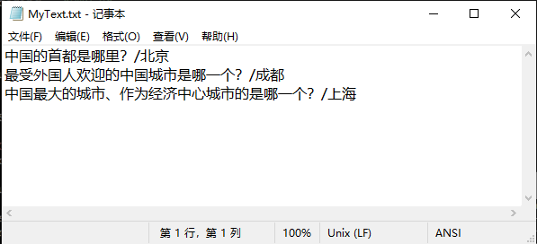
图 22 - 一个有三行文本的文本文件
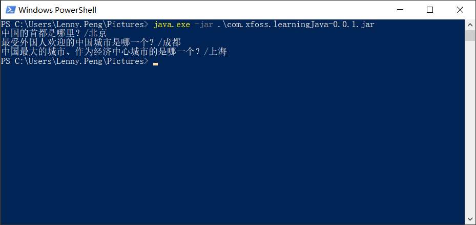
图 23 - ReadFile的输出
QuizCardPlayer （代码大纲）
QuizCardPlayer (code outline)
public class QuizCardPlayer {
public void go () {
// 构建并显示 GUI
}
class NextCardListener implements ActionListener {
public void actionPerformed (ActionEvent ev) {
// 若这是个问题，那么就展示其答案，否则就显示下一问题
// 对一个用于表示是在查看问题还是答案的标志标量进行设置
}
}
class OpenMenuListener implements Action Listener {
public void actionPerformed (ActionEvent ev) {
// 拉起一个文件对话框（bring up a file dialog box）
// 让用户导航到某个卡片集，并选中要打开的卡片集
}
}
private void loadFile(File file) {
// 这里必须通过从文本文件读取一些卡片，然后构建出
// 一个卡片的 ArrayList
//
// 此方法是从 OpenMenuListener 事件处理器中进行调用的，以一次
// 读取一行的方式来读取文件，并让 makeCard() 方法来从读取到的行
// 构造出新的卡片
//
// （文件中的一行，同时保存了问题与答案，问题与答案通过一个 '/'
// 分隔开）
}
private void makeCard(String lineToParse) {
// 由 loadFile() 方法调用，从文本文件拿到一行并
// 将改行解析为两个片段 -- 问题与答案 -- 还要创建出一个
// 新的 QuizCard 对象出来，然后把这个新的 QuizCard 对象添加
// 到名为 CardList 的 ArrayList
}
}
QuizCardPlayer 代码
package com.xfoss.QuizCard;
import java.util.*;
import java.awt.event.*;
import javax.swing.*;
import java.awt.*;
import java.io.*;
public class QuizCardPlayer extends JFrame {
private JTextArea display;
private ArrayList<QuizCard> cardList;
private QuizCard currentCard;
private int currentCardIndex;
private JButton nextBtn;
private boolean isShowAnswer;
public static void main (String[] args) {
QuizCardPlayer player = new QuizCardPlayer();
}
// 这个构造函数，就相当于之前的方法 go(), 用来构建 GUI
// 并省略了 main() 方法中的一个对 go() 的调用
public QuizCardPlayer () {
// 构建 GUI
super("测试卡播放器");
setDefaultCloseOperation(JFrame.EXIT_ON_CLOSE);
JPanel mainPanel = new JPanel();
Font bigFont = new Font("sanserif", Font.BOLD, 24);
display = new JTextArea(10, 20);
display.setFont(bigFont);
display.setLineWrap(true);
display.setEditable(false);
JScrollPane qScroller = new JScrollPane(display);
qScroller.setVerticalScrollBarPolicy(ScrollPaneConstants.VERTICAL_SCROLLBAR_ALWAYS);
qScroller.setHorizontalScrollBarPolicy(ScrollPaneConstants.HORIZONTAL_SCROLLBAR_NEVER);
nextBtn = new JButton("给出问题");
nextBtn.addActionListener(new NextCardListener());
nextBtn.setEnabled(false);
mainPanel.add(qScroller);
mainPanel.add(nextBtn);
JMenuBar menuBar = new JMenuBar ();
JMenu fileMenu = new JMenu("文件（F）");
fileMenu.setMnemonic(KeyEvent.VK_F);
JMenuItem loadMenuItem = new JMenuItem("加载卡片集（L）");
loadMenuItem.setMnemonic(KeyEvent.VK_L);
loadMenuItem.addActionListener(new OpenMenuListener());
JMenuItem quitMenuItem = new JMenuItem("退出（Q）");
quitMenuItem.addActionListener(new QuitMenuItemListener());
quitMenuItem.setMnemonic(KeyEvent.VK_Q);
fileMenu.add(loadMenuItem);
fileMenu.add(quitMenuItem);
menuBar.add(fileMenu);
setJMenuBar(menuBar);
getContentPane().add(BorderLayout.CENTER, mainPanel);
setSize(640, 500);
setVisible(true);
}
private class QuitMenuItemListener implements ActionListener {
public void actionPerformed (ActionEvent ev) {
dispose();
System.exit(0);
}
}
private class NextCardListener implements ActionListener {
// 这里对 isShowAnswer 这个布尔值标志进行检查，从而获悉
// 用户当前所查看的，究竟是问题还是答案，并根据具体情况
// 来进行适当的操作。
public void actionPerformed (ActionEvent ev) {
if (isShowAnswer) {
display.setText(currentCard.getAnswer());
nextBtn.setText("下一卡片");
isShowAnswer = false;
} else {
if (currentCardIndex < cardList.size()) showNextCard();
else {
display.setText("这已是最后一张卡片。");
nextBtn.setEnabled(false);
}
}
}
}
private class OpenMenuListener implements ActionListener {
public void actionPerformed (ActionEvent ev) {
// 拉起文件对话框并让用户进行导航，从而选择要打开的文件。
JFileChooser fileOpen = new JFileChooser();
fileOpen.showOpenDialog(QuizCardPlayer.this);
loadFile(fileOpen.getSelectedFile());
}
}
private void loadFile(File file) {
cardList = new ArrayList<QuizCard> ();
try {
// 构造一个链接到新的 FileReader 对象的 BufferedReader 对象
// 把用户从“打开文件”对话框中选择的文件对象，交给这里的
// FileReader 对象。
//
// 这里一次读取一行，然后把读到的行传递给对其进行解析
// 并将其转换到真正 QuizCard 对象、然后把这个对象添加到
// ArrayList 的 makeCard() 方法。
BufferedReader reader = new BufferedReader(new FileReader(file));
String line = null;
while ((line = reader.readLine()) != null) {
makeCard(line);
}
nextBtn.setEnabled(true);
reader.close();
} catch (Exception ex) {
System.out.println("无法读取卡片集文件");
ex.printStackTrace();
}
}
private void makeCard (String lineToParse) {
// 每行文本对应单个的卡片，不过这里必须把问题与答案
// 分别作为单独部分解析出来。这里使用了字符串 String
// 的 split() 方法来把文本行拆分成两个分词（tokens,
// 以恶用作问题，一个用作答案）。后面就会介绍到这个 split()
// 方法。
String [] result = lineToParse.split("/");
QuizCard card = new QuizCard(result[0], result[1]);
cardList.add(card);
System.out.println("构造好了一个卡片");
}
private void showNextCard () {
currentCard = cardList.get(currentCardIndex);
currentCardIndex++;
display.setText(currentCard.getQuestion());
nextBtn.setText("揭开答案");
isShowAnswer = true;
}
}
使用 String 的 split() 方法来解析
Parsing wih String split()
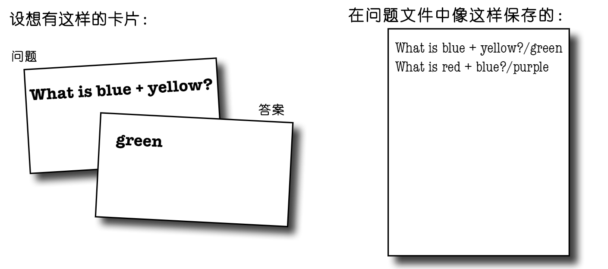
图 24 - 以文本文件方式保存对象数据
怎样区分出问题和答案？
How do you separate he question and answer?
在读取这个文件时，问题与答案是挤在一行里头的，以一个正斜杠（/）分隔开（由于这正是在 QuizCodeBuilder 代码中写到文件的方式）。
String 的静态方法 split() 实现了将字符串拆开为多个片段。
String split() lets you break a String into pieces.
方法 split() 是指，“给我一个分隔符，我就会为你拆分出这个字符串的所有片段，并把他们放到一个字符串数组中。”
图 25 - String类的静态方法 split()
// 在 QuizCardPlayer 应用中，这就是从文件中读取到单行
// 文本时看起来的样子
String toTest = "What i blue + yellow?/green";
// split() 方法取得这个正斜杠 '/' ，并使用这个正斜杠
// 来将这个字符串拆分成两个片段（在此示例中）。（请
// 注意：split() 要远比这里的用法强大。在与
// 过滤器、通配符等工具结合使用时，可以完成极为复杂的解析。）
String[] result = toTest.split("/");
// 对这个字符串字符进行遍历，并把各个分词（token，片段）打印
// 出来。在此示例中，就只有两个分词：“What is blue + yellow?”
// 以及 “green”。
for (String token:result) {
System.out.println(token);
}
答疑
- 好吧，我看了看你 API 文档，发现在
java.io包中差不多有 5 百万个类。到底该怎样知道要用哪些类呢？
I/OAPI 用到了模块化的 ‘链接’ 概念，因此就可以对这些连接性流与链式流（也叫做“过滤器”流），以相当宽泛的组合方式进行调用，从而获取到想要的几乎全部东西（TheI/OAPI uses the modular 'chaining' concept so that you can hook together connection streams and chain streams(also called 'filter' streams) in a wide range of combinations to get just about anything you could want）。这些处理链，不必仅止于两层；可在一个链式流上调用多个链式流，来获取到所需的恰当数量流程（The chains don't have to stop at two levels; you can hook multiple chain streams to one another to get just the right amount of processing you need）。
不过多数时候，都仅会用到上面这样的小而好用的类。比如在写入文本文件时，
BufferedReader与BufferedWriter（分别链接到FileReader与FileWriter）差不多就是所需的全部了。而在写入序列化对象时，就可以使用ObjectOutputStream与ObjectInputStream（分别链接到FileInputStream与FileOutputStream）。也就是说，今后要使用 Java
I/O来完成的操作，90% 都只会涉及到上面讲的两种情况。
- 请讲讲Java 1.4 中引入的新
I/O包nio中那些类的情况吧（What about the newI/Onioclass added in1.4）
java.nio包中的类，带来了大大的性能提升，并更好地利用了程序运行所在机器的原生优势（Thejava.nioclasses bring a big performance improvement and take greater advantage of native capatibilities of the maching your program is running on）。nio包的关键特性之一，就是让Java程序员可以对缓存进行直接控制。值得一提另一项新特性，则是非阻塞I/O（non-blockingI/O），指的是所编写的I/O代码，在没有要读取或写入的数据时，不会只是在那里发呆等候。nio中的一些既有类（包括FileInputStream与FileOutputStream），也都受益于一些新特性，等着我们去运用。不过这些nio类使用起来要复杂一些，所以除非 真的 需要这些新特性，那么就一直使用这里用到的简单版本就好。另外，在不小心的情况下，nio还会导致性能上的 损失。对于日常需要完成的I/O操作，这里用到的非nio的I/O，大约已经可以满足 90% 了，尤其是刚开始使用 Java 编程语言的时候。然而可以通过使用
FileInputStream，并经由其getChannel()方法（是在Java 1.4 版本中添加到FileInputStream类的），去访问他的 通道（channel） ，以此来让切换到nio的那些类更容易。
Roses are first, violets are next.
ReadersandWritersare only for text.
重点
- 对于写文本文件，要以
FileWriter连接性流开头； - 为效率着想，要将
FileWriter链接到BufferedWriter； File对象表示在特定路径的文件，而不表示文件的具体内容；- 有了
File对象，就可以对目录进行创建、遍历及删除操作； - 可使用字符串的文件名的那些流，大多数也可以使用
File对象，同时File对象用起来更加安全； - 要读取文本文件，就要以一个
FileReader连接性流开头； - 为效率着想，要将
FileReader链接到BufferedReader； - 要解析文本文件，就要确保该文件是以某种识别出不同元素的方式写下来的（To parse a text file, you need to be sure the file is written with some way to recognize the different elements）。而常见的方法，则是使用某种字符来将那些单独片段分隔开来；
- 使用
String类的split()方法，将字符串切分为多个单独分词。带有一个分隔符的字符串将有两个分词，分隔符的两侧各有一个。分隔符本身不被算作是分词。
版本ID：序列化的大问题
Version ID: A Big Serialization Gotcha
现在已经看到，Java中的 I/O实际上是相当简单的了，在一直使用最常见的连接/链式流时尤其如此。然而这里有个 或许 真的应该关注的问题。
版本控制至关重要！
Version Control is crucial!
在序列化某个对象时，为了随后的解序列化以及使用到这个对象，那么就必须要有对应的类。好吧，这是显然的。然而不那么显然的是，如果期间 修改了对象，会怎样呢？呀。设想在尝试恢复某个序列化的 Dog 对象时，有一个实例变量（非瞬态的）从双精度浮点数变成了字符串。这就极大地破坏了 Java 的类型安全这一痛点了（That violates Java's type-safe sensibilities in a Big Way）。然而这还不是唯一的可能会危害兼容性的做法。请思考下面这些：
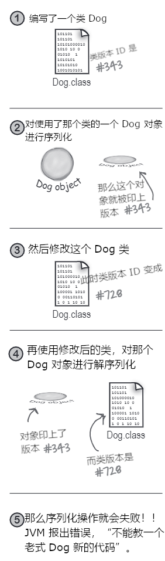
图 26 - 可序列化对象的版本控制
会危及解序列化操作的类修改：
- 删除某个实例变量；
- 修改实例变量的声明类型；
- 将非瞬态实例变量，修改为瞬态；
- 改变某个类在继承树上的位置（Moving a class up or down in the inheritance hierarchy）；
- 将某个类（只要是在对象图面上的）从可序列化修改为不可序列化（通过从类声明移除
implements Serializable）； - 把某个实例变量修改为静态变量。
通过不会造成问题的对类的修改：
- 往类加入新的实例变量（原有的那些对象，将以默认值来解序列化那些他们被序列化时所没有的那些实例变量）；
- 往继承树加入一些类；
- 从继承树移除一些类；
- 修改实例变量呃访问级别，对解序列化操作对该变量的赋值没有影响（Changing the access level of an instance variable has no effect on the ability of deserialization to assign a value to the variable）；
- 将某个瞬态实例变量，修改为非瞬态（先前被序列化的那些对象，将直接给先前瞬态的那些实例变量一个默认值）。
使用 serialVersionUID
在每次对象被序列化时，对象（包括其对象图面中的所有对象），就会被“印上（stamped）”一个其所属类的版本ID编号（a version ID number for the object's class）。这个ID就叫做 serialVersionUID，是依据类的结构信息计算得到的。在对象被解序列化时，若在对象被序列化后类被修改了，那么类就会有一个与被序列化对象所印上的不同 serialVersionUID，那么解序列化就会失败！然而对此可以自己掌控。
在认为类会有可能在今后 演化的情况下，就要在类中放入一个序列版本ID（If you think there is ANY possibility that your class might evolve, put a serial version ID in your class）
在Java尝试对某个对象解序列化时，他会对这个被序列化对象的 serialVersionUID 与 JVM 用来对这个对象进行解序列化的类serialVersionUID加以比较。比如，在某个 Dog 实例被以 ID 23（现实中 serialVersionUID 要长得多） 进行序列化时，那么在 JVM 对这个 Dog 对象解序列化时，就会首先拿这个 Dog 对象的 serialVesionID 与 Dog 类的 serialVersionUID 进行比较。在两个数字不匹配时，JVM 就会假定用于解序列化呃类，与先前被序列化的对象不兼容，同时在解序列化过程中会抛出一个异常。
那么解决办法就是在类中放入一个 serialVersionUID，然会随着类的演化，serialVersionUID将保持一致，这个时候就算类发生了改变， JVM 也会认为，“好吧，很好，这个类与这个被序列化对象是兼容的。”
这样处理也 只会 在对类修改小心谨慎时才凑效！也就是说，若在将旧有的对象以新的类复活时，有任何问题出现，都要由 代码编写者 来负责（In other words, you are taking responsibility for any issues that come up when an older object is brought back to life with a newer class）。
使用与 Java 开发包（Java development kit, jdk）一起发布的 serialver 工具，来获取类的 serialVersionUID:
$ serialver -classpath build/libs/com.xfoss.learningJava-0.0.1.jar com.xfoss.learningJava.Dog
com.xfoss.learningJava.Dog: private static final long serialVersionUID = 1720600418317157466L;
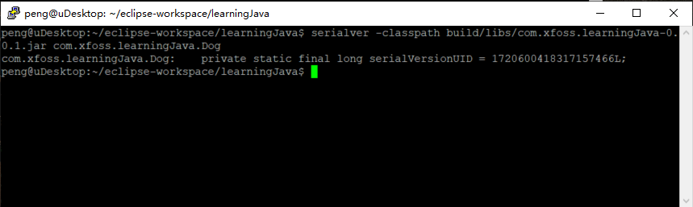
图 27 - serialver 命令工具的使用和输出
注：若类声明中没有
implements Serializable，那么serialver命令工具将给出如下输出：
$ serialver -classpath build/libs/com.xfoss.learningJava-0.0.1.jar com.xfoss.learningJava.Dog
Class com.xfoss.learningJava.Dog is not Serializable.
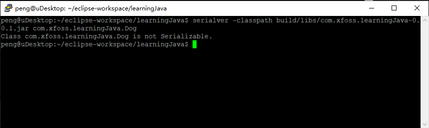
图 28 - 不可序列化对象的 serialver 输出
在有人已经序列化了某个类的对象后，而意识到这个类会进行演化时......
When you think your class might evolve after someone has serialized objects from it...
-
使用命令行工具
serialver获取这个类的版本 ID（serialVersionUID）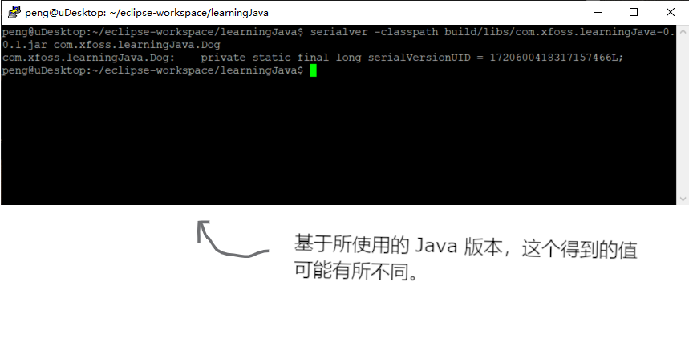
图 29 - 使用命令行工具
serialver，获取类的serialVersionUID -
将上面的输出，粘贴到类中
public class Dog { private static final long serialVersionUID = 1720600418317157466L; private String name; private int size; // 以下是方法的代码 } -
确保在对这个类做出修改时，自己要对这个类做出修改所带来的后果负责！比如就要确保新的
Dog类能够以默认值，来处理在Dog被序列化后，所添加的那些实例变量的解序列化（For example, be sure that your newDogclass can deal with an oldDogbe deserialized with default values for instance variables added to the class after theDogwas serialized）。
代码厨房
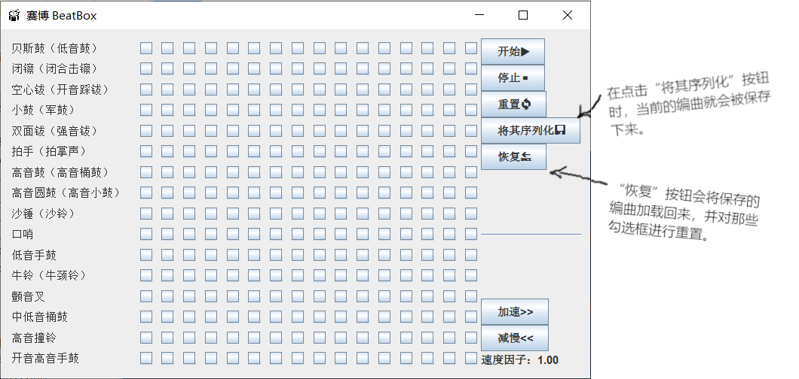
图 30 - 第14章代码厨房：BeatBox app 曲目数据的保存与恢复
这里要让 BeatBox 把那些喜欢的曲目，加以保存并恢复。
保存 BeatBox 编曲
Saving a BeatBox pattern
请记住，在 BeatBox 中，鼓编排无非就是一堆勾选框。在要演奏序列时，代码就会遍历这些勾选框，找出哪些鼓乐器的声音在总的16个节拍中的每个节拍会演奏（When it's time to play the sequence, the code walks through the checkboxes to figure out which drums sounds are playing at each of the 16 beats）。那么要保存编曲，只需把这些勾选框的状态保存下来即可。
这里可以构造一个简单的布尔值数组，来保存总共256个勾选框中各个勾选框的状态。由于数组 中的 那些东西可被序列化，因此数组亦是可序列化的，因此在保存布尔值的数组时没有问题。
而要将编曲加载回来，就要读取这个单个的布尔值数组对象（对其进行解序列化），并对这些勾选框加以恢复。在之前构建 BeatBox GUI的代码厨房中，已经见到了绝大部分的代码，那么在这一章中，就只会看到保存与恢复的代码了。
本次的代码厨房，将为下一章做好准备，在下一章中不再是把编曲写入 文件（file），而是要将编曲透过 网络（network） 发送到服务器。同时与从文件加载 进 编曲不同，下一章会从 服务器 获取到编曲，用户一次会发送一个编曲到服务器。
对编曲进行序列化（Serializing a pattern）
// 这是一个`BeatBox`代码里面的内部类。
class SendPatternListener implements ActionListener {
// 编曲保存操作，全部发生在用户点击了那个按钮，而发出了
// 这个 ActionEvent 的时候。
public void actionPerformed(ActionEvent ev) {
// 构造一个保存各个勾选框状态的布尔值数组。
boolean[] checkboxesState = new boolean[256];
// 对 checkBoxList（即那些勾选框的 ArrayList）进行遍历
// 并获得各个勾选框的状态，再将状态添加到这个布尔值
// 的数组中。
for (int i = 0; i < 256; i++){
JCheckBox check = (JCheckBox) checkBoxList.get(i);
if (check.isSelected()) checkboxesState[i] = true;
}
try {
// 这里就是小菜一碟了。只是将这个布尔值数组进行写入/序列化！
String serFile = String.format("%s/pattern.ser", XPlatformThings.getWorkingDir("BeatBox"));
FileOutputStream fileStream = new FileOutputStream(new File(serFile));
ObjectOutputStream os = new ObjectOutputStream(fileStream);
os.writeObject(checkboxesState);
os.close();
} catch (Exception ex) {
ex.printStackTrace();
}
}
}
BeatBox编曲的恢复
Restoring a BeatBox pattern
这就刚好与保存操作是反过来的了......读取那个序列化的布尔值数组对象，然后利用这个复活过来的数组对象，恢复GUI的那些勾选框状态。曲目恢复操作，全部发生自用户点击了“恢复”按钮的一瞬间。
编曲的恢复（Restoring a pattern）
// 这是另一个 BeatBox 代码里头的内部类。
class ReadInPatternListener implements ActionListener {
public void actionPerformed(ActionEvent ev) {
boolean[] checkboxesState = null;
try {
FileInputStream fileIn = new FileInputStream(new File(String.format("%s/pattern.ser",
XPlatformThings.getWorkingDir("BeatBox"))));
ObjectInputStream is = new ObjectInputStream(fileIn);
// 读取文件中那单独对象（即那个布尔值数组），并将其强制转换回到
// 布尔值数组（请记住，readObject() 方法返回的是一个类型为 Object
// 的引用变量。）
checkboxesState = (boolean[]) is.readObject();
is.close();
} catch (Exception ex) {ex.printStackTrace();}
// 现在对那些真正 JCheckBox 对象的 ArrayList 中各个勾选框状态
// 进行恢复。
for (int i = 0; i < 256; i++) {
JCheckBox check = (JCheckBox) checkboxList.get(i);
if(checkboxesState[i]) check.setSelected(true);
else check.setSelected(false);
}
// 此时要停止当前所演奏的任何曲目，并使用这个 JCheckBox ArrayList
// 中的那些勾选框状态，重建出 MIDI 序列。
s.stop();
buildTrackAndStart();
}
}
动手练习
Sharpen your pencil
此版本有着巨大局限！在点击了 "对其序列化" 按钮时，程序将自动进行序列化操作，到一个名为“pattern.ser”的文件（若该文件不存在，就会被创建出来）。不过在每次保存时，都将覆写先前保存的文件。
请通过结合 JFileChooser，对这里的保存与恢复特性加以改进，从而可以随意命名，并保存出许多不同的曲目，同时还能够从先前所保存的文件，加载/恢复出 任意 的曲目。